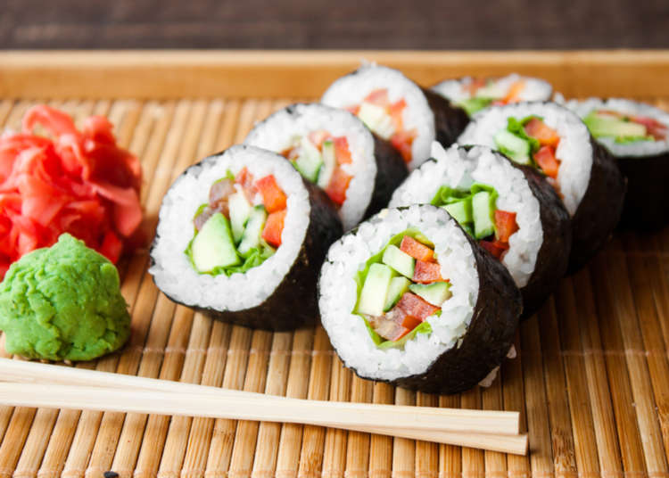

Il sushi (寿司? pronuncia giapponese [sɯ̥ɕiꜜ] o [sɯꜜɕi], in italiano /ˈsuʃʃi/) è un insieme di piatti tipici della cucina giapponese a
base di riso insieme ad altri ingredienti come pesce, alghe nori, uova o avocado. Il ripieno è crudo o in alcune varianti cotto e può essere
servito appoggiato sul riso, arrotolato in una striscia di alga, disposto in rotoli di riso o inserito in una piccola tasca di tofu.

Che tipi di Sushi esistono...?
La varietà del piatto nasce dalla scelta dei ripieni e guarnizioni, nella scelta degli altri condimenti e nella maniera in cui vengono combinati. Gli stessi ingredienti possono essere assemblati in maniere completamente differenti per ottenere effetti differenti. Questa sezione elenca le maniere diverse di costruire il sushi, indipendentemente dal tipo di ripieni e guarnizioni.
Makizushi ("sushi arrotolato"). 巻き寿司. Una polpettina, cilindrica o conica, formata con l'aiuto di un tappeto di bambù detto makisu. Il Makizushi è il tipo di sushi più familiare alla maggior parte degli occidentali. Generalmente è avvolto nel nori, un foglio di alga seccato che racchiude il riso e il ripieno. In base alla forma e struttura prende il nome di:
Futomaki ("rotoli larghi"). 太巻き. Una polpetta cilindrica, con il nori all'esterno, tipicamente alta due o tre centimetri e larga quattro o cinque. È spesso fatta con due o tre ripieni scelti in modo da completarsi a vicenda in gusto e colore.
Hosomaki ("rotoli sottili"). 細巻き. Una polpettina cilindrica, con il nori all'esterno, tipicamente alta due centimetri e larga due. Generalmente ha un solo tipo di ripieno (salmone) ma può contenere anche il tonno o, più raramente, l'avocado.
Temaki ("rotoli mano"). 手巻き. Una polpetta a forma di cono, con il nori all'esterno e gli ingredienti che sporgono dall'estremità larga. Di maggiori dimensioni, tradizionalmente lungo dieci centimetri, va mangiato a morsi tenendolo con le dita, perché sarebbe troppo difficile da sollevare con i bastoncini.
Uramaki ("rotoli interno-esterno"). 裏巻き. Una polpetta cilindrica con il nori all'interno, di dimensioni medie e con due o più ripieni. Il ripieno è al centro circondato da un foglio di nori, quindi uno strato di riso e una guarnizione esterna di un altro ingrediente, come uova di pesce o semi di sesamo tostati.
Oshizushi ("sushi pressato"). 押し寿司. Un blocco formato usando una forma di legno detta oshibako. Il cuoco allinea il fondo dell'oshibako con la guarnizione, lo copre con riso sushi e preme il coperchio della forma per creare un blocco compatto e rettangolare. Il blocco viene rimosso dalla forma e tagliato in pezzi delle dimensioni di un boccone.
Nigirizushi ("sushi modellato a mano"). 握り寿司. Piccola polpettina di riso pressato a mano, spesso con una punta di wasabi, con una fettina sottile di guarnizione sopra. Difficile da preparare, è possibilmente legata con una striscia sottile di nori.
Gunkanzushi ("sushi nave da battaglia"). 軍艦寿司. Una polpettina di riso di forma ovale, circondata da una striscia di nori, con degli ingredienti, come uova di pesce, impilati sopra.
Inari / Inarizushi ("sushi ripieno"). 稲荷寿司. Una piccola tasca o cavità riempita con riso sushi e altri ingredienti. La tasca viene ricavata da un pezzo di tofu fritto (油揚げ o abura age), da una sottile frittata (帛紗寿司 o fukusazushi) o da foglie di cavolo (干瓢 o kanpyo).
Chirashizushi ("sushi sparpagliato"). 散らし寿司. Una ciotola di riso sushi con gli altri ingredienti mischiati. Detto anche barazushi. ばら寿司.
Edomae chirashizushi ("Sushi sparpagliato allo stile di Edo"). 江戸前散らし寿司. Gli ingredienti crudi sono miscelati con arte sopra al riso in una ciotola.
Gomokuzushi ("sushi nello stile del Kansai"). 五目寿司. Ingredienti cotti o crudi miscelati insieme al riso nella ciotola.
Narezushi (なれ鮨) una forma più antica di sushi. Si rimuovono gli organi interni e le squame dai pesci, quindi li si riempiono di sale, si mettono in un barile di legno, miscelati con sale e pressati con un pesante tsukemonoishi o una pietra. Vengono lasciati fermentare per un periodo da dieci giorni a un mese, quindi rimossi e immersi in acqua per un tempo da quindici minuti a un'ora. Infine vengono piazzati in un altro barile a strati con riso bollito freddo e pesce. Ancora una volta vengono sigillati con un'otosibuta e una pickling stone. Con il passare dei giorni l'acqua fermentata filtra all'esterno e viene rimossa. Dopo sei mesi questi narezushi sono pronti per essere mangiati, ma si possono attendere anche altri sei mesi o più.
Funazushi (鮒寿司) comporta la fermentazione lattica anaerobica di un pesce d'acqua dolce, funa (鮒, Carassius carassius). È un piatto regionale della Prefettura di Shiga ed è considerato una "chinmi", una prelibatezza della cucina giapponese.